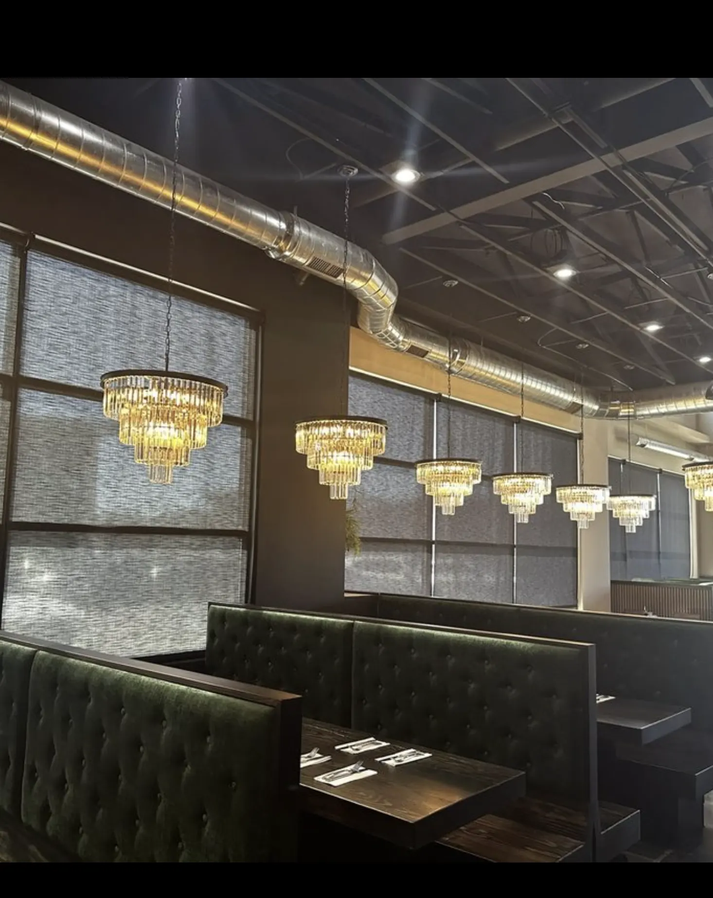

made-to-order brunch
The menu centers on fresh breakfast and lunch favorites, including French toast, Urban Benedict, guacamole toast, skillets, breakfast burritos, sandwiches, soups, salads, pastries, and espresso drinks.
Our Story
Urban Kitchen is where craft meets comfort: fresh, made-to-order breakfast and lunch favorites served in a warm, polished dining room with green velvet booths, crystal chandeliers, and the easy rhythm of coffee and conversation.

Brunch House
Guests visit Urban Kitchen for French toast, benedicts, guacamole toast, skillets, sandwiches, coffee, soups, salads, and weekend brunch in Pleasant Grove, Utah.
Explore the MenuWhat To Expect
Urban Kitchen is a Pleasant Grove restaurant built around the meals people linger over: brunch with friends, weekday breakfast, casual lunch, coffee, and weekend plates served in a dining room that feels both modern and comfortable.
The menu centers on fresh breakfast and lunch favorites, including French toast, Urban Benedict, guacamole toast, skillets, breakfast burritos, sandwiches, soups, salads, pastries, and espresso drinks.
Green velvet booths, crystal chandeliers, warm brass light, and the hum of coffee give Urban Kitchen a brunch house atmosphere that feels distinct in Pleasant Grove and Utah County.
Find Urban Kitchen at 425 S. North County, Suite D in Pleasant Grove, close to American Fork, Lindon, and nearby Utah County neighborhoods looking for brunch, breakfast, and lunch.
Visit Us
We are open Monday-Friday from 8:00 AM-2:00 PM and Saturday-Sunday from 7:00 AM-3:00 PM. Browse the menu, get directions, or call to ask about reservations.